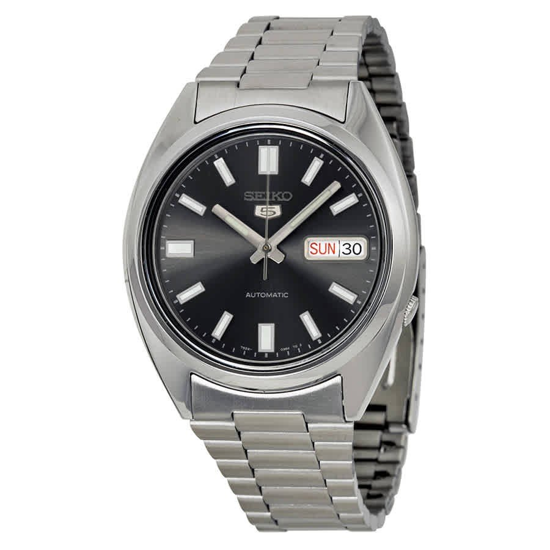
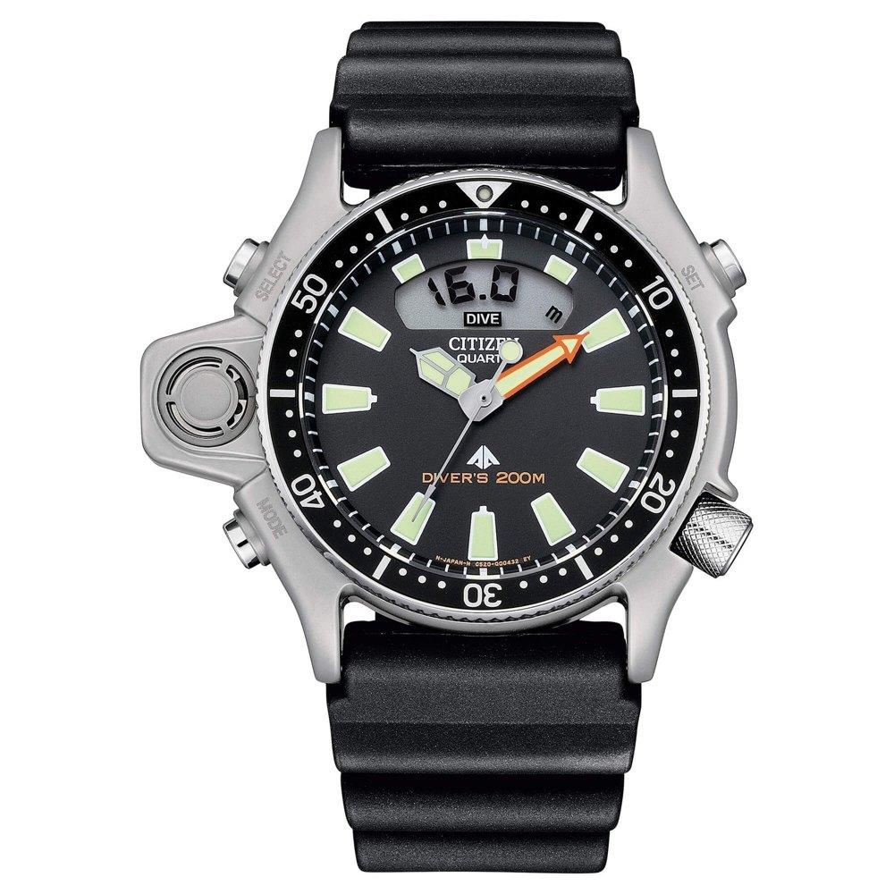
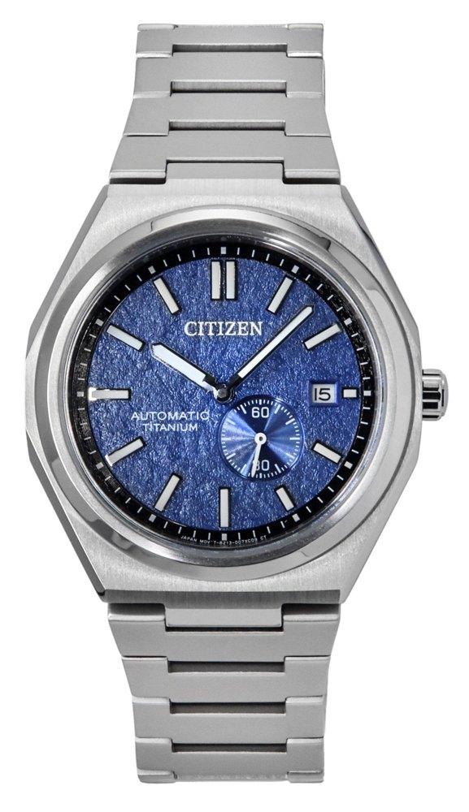

Jump to a watch

A168WA-1 Vintage Digital
- 36mm
- 38.6mm lug to lug
- 9.6mm thick
- Quartz
- EL backlight
Pure 1980s digital, and the proportions are close to perfect. The bracelet tapers, the clasp slides to adjust so you never pull links, and the watch is so light you forget you have it on. The video's host owns mechanical watches and still reaches for this one.
It does time, day, date, alarm and stopwatch. The upgrade over cheaper Casios is the electroluminescent backlight, which lights the whole screen evenly instead of a dim corner.
Why nerds respect it: the most watch you can buy for thirty bucks.
Both buttons open the same Amazon listing. One supports this page, the other supports ANACHRONIST. Your call.

GW-M5610U-1 Solar Atomic Square
- Tough Solar
- Multiband 6 atomic sync
- 200m water resistance
- Shock resistant
The G-Shock exists because its designer dropped a watch in the early 80s, watched it break, and set out to build one that couldn't. The square case has barely changed since. It was the host's first watch, and this is the version to get: solar charging so you never swap a battery, and radio sync so it's always on the exact time.
Throw it, drop it, swim with it. It doesn't care.
Why nerds respect it: it's the one watch that can do every job.

Seiko 5 SNXS79 Automatic
- 36.5mm
- 42mm lug to lug
- 7S26 automatic
- 42h power reserve
Seiko's classic entry automatic, and the dial is why it punches up. Applied indices and an applied logo give it real depth, and the gray sunburst shifts toward brown as the light moves. It looks like it belongs on a $400 watch.
The stock bracelet is thin, but it has that old-school Seiko charm. The 7S26 inside doesn't hack or hand wind, so you shake it to start it (see the notes below). Once running, it's a tank. Seiko has discontinued it, so eBay is where they are now.
Why nerds respect it: a proper Japanese automatic for about the price of dinner for two.

Seiko 5 Sports SKX GMT
- 4R34 GMT automatic
- ~13.5mm thick
- Rotating 24h bezel
- Up to 3 time zones
A GMT adds a 24 hour hand for a second time zone, and with the rotating bezel you can track a third. The host calls time, date and GMT one of the most useful combos you can put on a wrist. The 4R34 is an office GMT, meaning the GMT hand sets on its own.
It comes in a lot of colors. The black and gold is a killer combo. Try it on a Zero-pass strap too. It's the channel's own design, a single pass strap with no fabric under the case, so the watch sits flatter and gets the military look. Get it from ANACHRONIST's shop.
Why nerds respect it: a real travel complication without the luxury tax.

Marlin Quartz Chronograph 40mm
- 40mm
- Quartz chronograph
- Domed crystal
- Art deco numerals
Timex can be hit or miss. This is a hit. It borrows straight from 1960s racing chronographs: art deco numerals, stick hands, and a domed crystal that catches the light like an old one. It feels like more than its price.
The video features the white panda dial with black subdials. The listing below is the champagne on a bracelet. If you see the panda, grab it.
Why nerds respect it: the vintage chrono look, done honestly, for about $200.

Expedition North Titanium Automatic
- 41mm
- 12.5mm thick
- Bead blasted titanium
- 200m water resistance
- Miyota 8 series
A real field watch. The bead blasted titanium keeps it light and hides scratches, and big Arabic numerals with big hands make it dead easy to read. 200 meters of water resistance covers any lake, river or boat trip you have planned.
It's not thin, but it still wears fine on small and medium wrists. This is the one you take outside and don't baby.
Why nerds respect it: titanium, automatic and 200m, for a few hundred bucks.
Both buttons open the same Amazon listing. One supports this page, the other supports ANACHRONIST. Your call.

Promaster Aqualand JP2000
- 43.5mm (50.7mm at sensor)
- 48mm lug to lug
- Depth meter
- Since 1985
The weird one, and the one with the best story. Citizen launched the Aqualand in 1985 as a diver with a built in depth gauge. That bulge on the side of the case is the sensor, and the display logs how deep you went and for how long.
On paper it's big. On the wrist it wears smaller than you'd think. Amazon lists it for over $600, so eBay is usually the better deal.
Why nerds respect it: anyone who asks "what is that thing?" gets a great answer.

Zenshin Super Titanium
- 40.5mm
- Integrated bracelet
- Super Titanium
- Automatic
- Small seconds
For anyone tired of seeing a Tissot PRX on every wrist. It's an integrated bracelet watch in Citizen's Super Titanium, so it's very light, and the textured blue dial looks like something from a much pricier Japanese brand. The small seconds subdial gives it its own face and actually helps legibility.
The one in the video is the automatic NJ0180 with the small seconds dial, and eBay is the place to find it. ANACHRONIST's Amazon link goes to its sibling, the solar Eco-Drive AW0130 at 39mm with no battery to change. Same look, same titanium.
Why nerds respect it: try finding another titanium integrated bracelet watch this good under $500.
Eco-Drive AW0130 on Amazon, about $420 to $470. Both links open the same listing. One supports this page, the other supports ANACHRONIST.
Eco-Drive on Amazon →ANACHRONIST's link →
Bambino 38mm Version 7
- 38mm
- Curved lugs
- Domed crystal
- F6724 automatic
Possibly the best dress watch at its price, and the 38mm update finally nailed the proportions. The lugs curve down so it hugs the wrist. The movement is made by Epson, yes the printer company, and it's a reliable workhorse.
The video shows a cream dial with blued hands. This listing is the silver case with a white dial, and cream, blue and green are listed too. Change the strap and it feels like a different watch.
Why nerds respect it: it's the first dress watch for half the hobby, and it still holds up.
Same watch, two Amazon listings. One link supports this page, the other supports ANACHRONIST. Your call.
Know the quirks
The Seiko shuffle. The SNXS's 7S26 can't be wound by hand, and the seconds hand keeps running when you pull the crown. To start it, give it a few gentle side to side shakes.
The Miyota wobble. The Timex and the Zenshin use Miyota 8 series movements. The rotor spins freely one way, so you may feel a light wobble when you move your arm. That's normal.
What to expect. About 42 hours of power, so roughly two days off the wrist, and 10 to 20 seconds a day of drift. If you want dead-on time, the Casios and the Marlin are quartz.
Watch the full video
All nine picks come from ANACHRONIST, who shows every one of these on the wrist. If this summary helped, their video deserves the view and the channel deserves the subscribe.
▶ Watch ANACHRONIST on YouTube